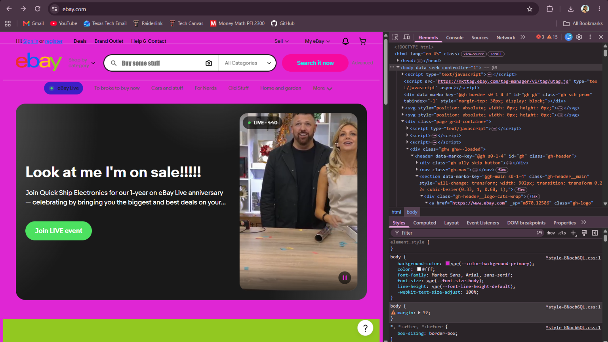

My Dev Tools Vandalism
I used browser developer tools to temporarily "vandalize" a website. Below is a screenshot showing my changes. These edits only appeared on my computer and did not affect the actual website.

What I "Vandalized" on Ebay
I used my browser's developer tools to give eBay website a more colorful and playful looks. I changed some of the category names at the top of the page and updated the search bar text from "Search for Anything" to "Buy some Stuff." I also changed the Apple promotion title from "ANNIVERSARY 8 Hours of Flash Deals on Apple" to "Look at me I'm on sale!!!"
For the styling I changed the background from white to hot pink because pink is my favorite color and I wanted the page to look different from the eBay website I usually see. I also adjusted some button colors and other elements to make them easier to read against the pink background. Another change I made was ubdating the font in the search bar.
My favorite part was making the website feel less serious by adding funny category names and a playful promotional headline. I chose these areas because the navigation, search bar, and promotions are some of the first things I notice or use when visiting eBay.
Some changes were easier to make than others. When I experimented with certain colors I could not always see a difference and i was not sure why. Some of the HTML and CSS were also more advanced than what I have worked with so far so I did not understand every part.
Overall this activity helped me better understand how developer tools can be used to experiment with a website's text and appearance. Although I still have more to learn about how HTML and CSS work together. I feel more comfortable using DevTools to try out designindeas for my own webpage.